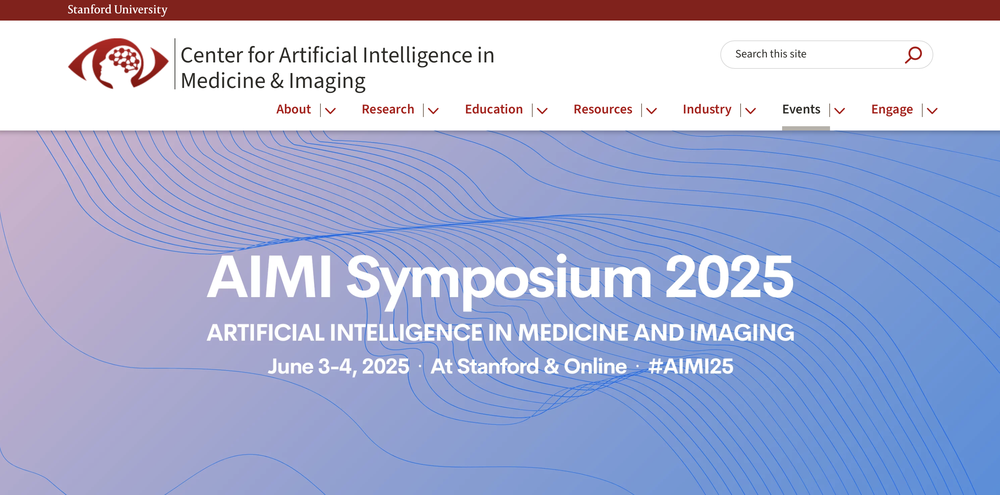

Welcome back to another week of [VS]Codes! A few weeks ago, I had the opportunity to attend the 2025 Stanford AIMI Symposium, a hybrid in-person and remote conference hosted by the Stanford Center for Artificial Intelligence in Medicine and Imaging (AIMI), where researchers, clinicians, and industry leaders came together to discuss one of the most urgent challenges in health AI: closing the gap between technical innovation and real-world clinical adoption. Below are my notes and takeaways from all of the talks and panels that I attended.

Opening Keynote: “Closing the Gap Between AI Capabilities and Health System Readiness”
- Julia Adler-Milstein (UCSF)
Adler-Milstein mapped the history of enterprise technology (how we get large organizations to adopt new tech) in healthcare into four major waves: EHRs, Interoperability, Telemedicine, and AI
Each past wave has been catalyzed by different forces. For instance, EHR development was driven by federal policy, while telemedicine arose as a common practice as a result of the COVID-19 pandemic.
AI, however, is different. There is no policy mandate or acute crisis driving its adoption. Rather, it presents a fast-moving set of technologies with the potential to solve sticky healthcare problems in new and exciting ways.
The core tension of the AI era? Technology is outpacing the people, processes, and infrastructure meant to adopt it. Adler-Milstein challenged the audience to think beyond model performance and to consider “market readiness” and organizational capacity as equally important. Her framework for this process, the Health AI Delivery Agenda, focused on five under-examined but critical questions:
- Will electronic health information (eHI) and LLMs finally deliver on the promise of patient engagement? We’ve had access to electronic health information for years, but how do we help patients understand their data? Should prompt engineering be built into patient portals?
- Is there institutional capacity to act on AI predictions? Do implementation leaders have enough authority to change existing clinical workflows?
- What is the optimal “unit” of AI? Can we move beyond modular predictive models to closed-loop systems that span administrative and clinical functions?
- How do we establish robust, ongoing monitoring of AI performance? Who notices when models degrade or perform poorly across subpopulations? And who is responsible for fixing these issues when they arise?
- What are the best investments for creating an AI-ready workforce? Should we start with the creation of stopgap training programs? How do we assess skill erosion and development?
Panel 1: Hard-won lessons from the front lines of clinical AI
Panelists: Ray Chen (Ambience Healthcare), Toyin Falola (Providence Health), Sneha Jain (Stanford), Joseph Izzo (Kaiser Permanente / San Joaquin General)
This panel focused on implementation reality: governance, trust, and usability. One memorable metaphor compared AI stakeholders to a “chicken and pig starting a restaurant,” highlighting the difference between basic involvement and deep commitment. The success of clinical AI, they argued, hinges on executive-level sponsorship: “Some AI tools are helpful. A few are transformational. But none can flourish without institutional commitment at the top.”
Another recurring theme from the panel was the concept of workflow integration. For clinicians to trust and adopt tools, AI cannot be an extra step - it must be invisible, reliable, and tightly woven into existing practices.
Scientific Talks Session 1
Carol Cain (Kaiser Permanente): Quality Assurance for AI-Powered Clinical Documentation
Cain shared a case study on implementing ambient scribe technology (Abridge) across Kaiser Permanente - arguably the fastest roll-out of any new tool in their history. Their goal: reduce clinician documentation burden while preserving the quality of patient interactions. Even a 5-minute delay in note generation is a deal-breaker in clinical workflows. Their evaluation framework balanced speed and safety using a combination of structured note quality reviews, starred tech performance ratings, and user feedback and scenario-specific assessments
Common issues identified through their evaluation framework included content omission, over-synthesis of information, and confusion between speaker voices (speaker diarisation).
Their strategy to address these challenges? Decentralized risk identification combined with centralized improvement cycles - “We needed fast feedback loops, but not at the expense of local nuance.” Ultimately, success came from balancing centralized governance with local responsiveness.
Daniel Morgan (Veterans Affairs): Detecting HAIs with LLMs
Morgan presented an ambitious pilot: using GPT-4 to help identify central line-associated bloodstream infections (CLABSI), an important quality metric tied to CMS reimbursement.
In current practice, the identification of CLABSI requires manual chart review, which can be slow, subjective, and inconsistently applied. Using a secure, local deployment of GPT-4, the VA was able to compare CLABSI charting across three review processes: human-only review, AI-only review, and AI-assisted human review.
Morgan and his team found that AI-assisted review was both faster (14 vs. 25 mins) and more accurate than manual review alone. Still, trust remained a hurdle: clinicians felt compelled to double-check outputs of the model in the EHR. Furthermore, GPT-4 made some avoidable errors in the study. Nevertheless, these errors were easily correctable by the providers, suggesting that a collaborative framework may be optimal. Next steps include integrating different forms of structured and unstructured data into the predictive models, as well as expanding to other hospital-acquired conditions.
Panel 2: The foundation model roadmap – what health AI teams need to know
Panelists: Emily Alsentzer (Stanford), Khaled Saab (Google DeepMind), Karan Singhal (OpenAI), Marinka Zitnik (Harvard)
This panel dove into practical implications of working with foundation models in health. Key takeaways included the following:
Smaller, better models are on the rise, but performance still hinges on context and fine-tuning. Medical fine-tuning may degrade a larger model’s general skills, making training pipelines for healthcare use cases a delicate balance. Researchers and clinicians will have to carefully consider how ’omics data and other nontraditional inputs are incorporated into these systems to ensure that scalability and precision are maintained as best as possible.
With respect to the nondeterminism of LLMs, concepts including semantic linkage and prompt variability remain under-explored areas. Furthermore, tradeoffs in transparency and control have to be considered when choosing between open and closed models.
Lightning Talks Session 1
- Brice Gaudillere (Stanford): Driving Precision Medicine by Decoding the Human Immune System
Aiming to build the first foundation model for complex immunological datasets to identify biomarkers for tools
90% of ’omics studies have fewer than 100 patients involved… makes it difficult to identify statistically relevant biomarkers
Use a noise injection technique to identify the most reliable, stable biomarkers
- Xuan Zhao (Flourish Science): Empowering Every Mental Health and Wellness Journey
Switch from reactive to proactive mental health treatment
The “Last Mile Problem” of science - how do we deliver the right insight at the right time?
Use AI to facilitate personalized mental health support
- Awareness, Action, Habit Building, Social Connection
- Marcos Rojas (Stanford): Clinical Mind AI: Improving Clinical Reasoning with AI
Medical school and residency are focused on teaching clinical reasoning
Challenges in teaching present opportunities to use new technologies:
An AI-powered learning platform designed to enhance clinical reasoning for healthcare practitioners
Create customized AI-simulated patients
Provide real-time feedback
Adapt to diverse medical curricula
Panel 3: Preparing clinicians for an AI-enabled future
Panelists: Eric Horvitz (Microsoft), Daniel Ting (Duke), Daniel Yang (Kaiser Permanente), Julie Tsu-Yu Wu (Veterans Affairs)
The biggest point of consensus for these panelists was the following: “Clinicians won’t be replaced. But clinicians who use AI effectively will set the new norm.” True innovation lies in co-creation between technologists and care teams. Lastly, the use of AI in compute was compared to the transition from horses to cars - before the invention of cars, if asked what they wanted, the public would have said “faster horses.” We need to think outside of the box of what’s possible, broadening the AI vision beyond note summarization and information retrieval to new applications that would never have been possible before.
Scientific Talks Session 2
- Francois Raoux (Stanford): MedAgentBrief
What’s the most significant issue in healthcare today? The explosion of (often hidden) information that overwhelms human capabilities
Pages of unstructured, sometimes inconsistent data from discharge summaries
Provider “pajama time”: late-night summary writing
Average chart-closure delay: 24-72 hours post-discharge
Diverts time from hand-offs / direct patient conversations
High-quality summaries could solve these issues
Two approaches toward scalable and trustworthy evaluation sof hospital course summaries
a. Human Expert Evaluation: trust-worthy but slow
b. LLM judge: lack of trust; need an oracle LLM to judge
How to get best of both worlds?
- MedFactEval: experts come up with expected outputs (what key points need to be included). Expensive, but one-time cost
- Then an LLM judges the generated text to make sure physician opinions are present
- Compared to full physician evaluations
- MedFactEval: experts come up with expected outputs (what key points need to be included). Expensive, but one-time cost
Impact Evaluation
- Safety, Effectiveness, Expansion, Post-deployment surveillance
- Vicky Bikia (Stanford): Toward Scalable Clinical Evaluation: Building Ground Truth for Discharge Summaries Using LLMs
Fluent ≠ Factual. Traditional NLP baselines can’t assess clinical factuality
Perturbation Engine - introduce clinical errors into reference summaries that can be used to train smaller models with fewer parameters
- Creating labeled ground truth data at scale with controlled, clinically meaningful errors
SAFRAN builds on this foundation with:
clinically grounded error categories
scalable perturbation-based datasets
student-teacher LLM evaluation and quantitative scoring
Together, enable scalable, automated benchmarking of LLM-generated clinical summaries
- Bridge expert review and real-world deployment
- Xiohan Wang (Stanford): Towards AI-Assisted Surgery and Surgical Training
Spatio-temporal modeling of hands during surgeries
Video Self-training with augmented reasoning
- Iterative self-training to create VideoVLM with better reasoning capabilities
Panel 4: ROI – Which AI solutions are built to scale?
Panelists: Lynne Chou O’Keefe (Define Ventures), Fabiënne ter Huurne (Bayer), Galym Imanbayev (Lightspeed Venture Partners), Christine Nguyen (Inland Empire Health Plan)
This venture-focused panel tackled the business reality of health AI. Some key points included the following:
- Companies like Abridge are gaining traction by positioning themselves as viable alternatives to dominant players like Nuance. Success requires clearly demonstrating your unique value in a crowded market.
- Health tech evolves in phases - early versions don’t need to be perfect, but teams must be bold enough to launch, iterate, and build momentum. Intermediate phases are about accumulating wins and expanding use cases, while late stage phases should focus on transforming care delivery and redefining value.
- Venture capital looks for scalable ROI across healthcare verticals, but alignment with patient outcomes is key. Innovations should ideally benefit both investors and patients, particularly by lowering long-term costs.
- While improving outcomes can eventually reduce costs, not every new technology is cost-effective upfront. Strategic investment and evaluation are essential.
- Much of today’s innovation focuses on simplifying administrative tasks to free up provider time and improve efficiency. Clinical AI is likely to be the next major focus of funding, but administrative solutions are still going to have major impact in the long-term
Lightning Talks Session 2
- Dimitry Tran (Harrison.ai)
- There is a global shortage of providers that is leading to delay of care
- 10 years’ worth of promise to catch up to in fields of radiology and pathology
- We need to go from “isolated clinical predictions” and “AI point solutions” to comprehensive AI.
- Harrison.ai creates models that have the ability to handle multiple subtypes of diagnoses
- Next steps: Vision Language Models
- AI takes in imaging and patient history to write a report
- Fill in a template with section/headings/etc.
- Kimberly Chun (Cohere): Path to Agentic AI for Healthcare
- Cohere offers customized, multilingual, accurate, secure models for both on-prem and cloud platforms
- Narrow products that are entirely focused around the needs of individual customers
- Collaboration across a variety of sectors
- The path to agentic AI includes:
- Single container deployment of autonomous agent applications (Application Layer)
- RAG-optimized generative models
- Search applications
- Plug-and-play customizable integrations with popular business apps
- Jayodita Sangvhi (Color): Large Language Experts: Trustworthy AI for Complex Clinical Workflows
What will AI’s role in medicine be? A smart efficient assistant vs. a trustworthy expert?
- There needs to be a balance between efficiency and accuracy/trust
In oncology, timely workup between diagnosis and treatment is critical but complex
- There are a lot of steps to go from first abnormal screen to treatment
Our goal is to smooth the process out for improved prognosis
Color Copilot: generative AI mixed with clinical guidelines
Input guidelines into LLM to create structured questions/prompts
Extract clinical decision factors from patient summary → input into a logic evaluater
Last step: another LLM to provide contextualized recommendation / explanation for reasoning
- Daniel Golden (Google Health): MedGemma: Accelerating the Health AI developer community with open medical foundation models
About Google Research’s Health AI team
Mission: catalyze the adoption of human-centered AI in health
Show the world how to build safe and effective AI
Enable others to build AI for their use cases
Health AI Developer Foundations (HAI-DEF)
Open models to accelerate the development of AI for healthcare and life sciences
Medical Embeddings
TxGemma (therapeutics simulation)
MedGemma (Medical image and text comprehension)
MedGemma includes 2 different models
Smaller 4B param model for multimodal data integration
Larger 27B param thinking model: clinical reasoning, triage, summarization / retrieval, etc.
Models are:
Medically tuned - customized image encoder and tuned text capabilities
High performance - performance approaches larger, proprietary models
Open to all - ideal starting point for developers working on medical research or products/applications
Although it may not be as accurate as the biggest models, it allows data to stay on site, permits adaptation for specific research applications, offline use, low inference costs, and medical device regulatory approval
Publicly available on Hugging Face
- Krishnaram Kenthapadi (Oracle Health AI): Oracle Health Clinical AI Agents: Insights from Building and Deploying AI Agents
Administrative burden - we need to restore the joy in providing patient care
Clinical AI Agent - voice-first agentic experiences
- Make AI accessible
Multi-agent orchestrator interacts with UI agents, API agents, search agents, etc. LLM based tool calling and argument extraction
- App context, conversation history, patient context as input
Engage with domain experts to improve data quality and evaluation methodology in addition to model dev
Prioritizing which investmenets are likely to become important
Early and rapid iteration to validate key assumptions and obtain early feedback
Trustworthy AI is crucial for adoption of agents in healthcare
Long-term monitoring is important too
Catching new biases, performance degradation
Panel 5: Publishing health AI – how journals are shaping the future
Panelists: Charlotte Haug (NEJM AI), Yulin Hswen (JAMA), Chris Paton (BMJ Digital Health and AI)
AI publishing in healthcare needs a major shift. Journals should prioritize transparency, standardized evaluation methods, and clear explanations of modeling decisions, with editors aligned on consistent expectations. Given the patchy state of international regulation, alternative frameworks are needed to balance access and reproducibility. The current publishing pace lags far behind the rapid evolution of AI, and while large language models show promise, they’re not yet equipped to support peer review. Journals also tend to overvalue novelty and impact at the expense of incremental but meaningful progress. Ultimately, the focus must shift from algorithmic flashiness to real-world improvements in patient outcomes.
Fireside Chat: A Policy Perspective for Moving Clinical AI Forward
Speakers: Michelle Mello (Stanford), Julia Adler-Milstein (UCSF)
In today’s current political environment, the U.S. may be drifting toward an unregulated clinical AI marketplace - nevertheless, thoughtful regulation is essential for sustainable innovation. As Mello put it, we need to avoid the “Magpie vs. Cat” trap - don’t chase every shiny new model like a magpie… instead, be more like a cat: selective, skeptical, and willing to walk away from hype.
Effective AI governance should empower organizations to say “no,” keeping the patient as the ultimate North Star. This means shifting from narrow, individual-level predictions to systems-level thinking, and avoiding the “Turing Trap” of simply trying to mimic human behavior. Instead, AI should enable new capabilities and long-term value creation.
While speed is important, lasting impact matters more, especially in a field where success depends on not just clinical accuracy, but also clinical feasibility. Furthermore, “snapshot AI” isn’t enough - healthcare is inherently longitudinal, and predictions for patients must be treated the same way.
Finally, there’s a major medical data gap. Healthcare training datasets are far smaller than in other domains, making it critical to invest in robust, domain-specific data strategies to ensure meaningful progress.
Final Thoughts
Overall, the Stanford AIMI Conference revealed a major theme for me: AI alone won’t transform healthcare. While AI’s technical trajectory is unstoppable, its impact is neither inevitable nor evenly distributed. Current bottlenecks in the incorporation of AI into larger clinical practice are human, organizational, and regulatory.
Nevertheless, the talks and panels at the conference also highlighted a hopeful next step in the pursuit of health AI - the next frontier doesn’t lie just in the creation of better models, but in designing institutional ecosystems ready to absorb, govern, and benefit from them.
Ultimately, the implementation of broader health AI won’t succeed through technology itself. It requires courageous leadership, human trust, and organizational vision.